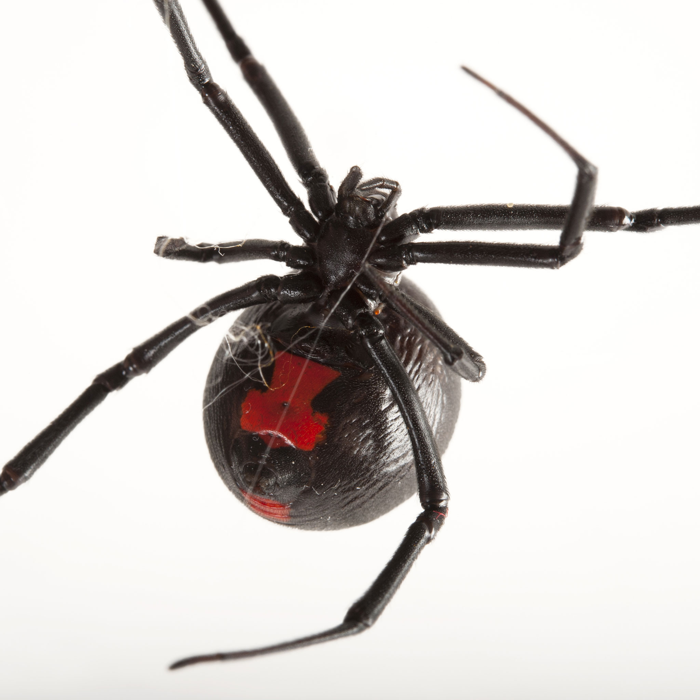
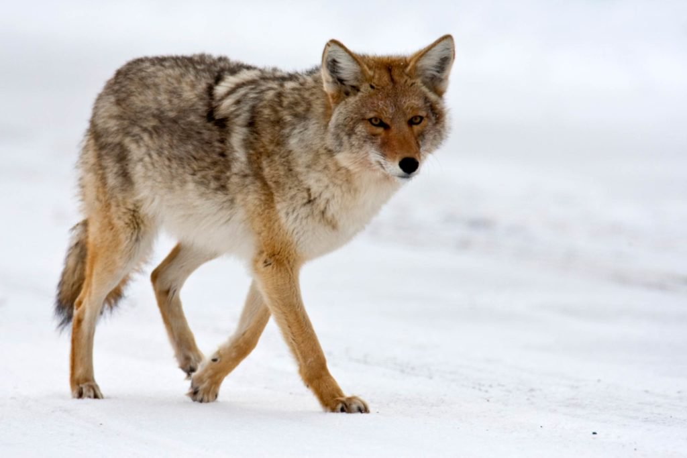

Rattlensnakes can be found in most fields far away from roads or populated areas, although they have been known to be seen in those as well. While they are poisonous snakes, there is known medical treatment for their bite, however it will hurt immensely. Rattlensakes can be identified by the diamond shading of their scales and the bulbous "rattle" found at the tip of their tail. While they are generally thought of as vicious animals, snakes tend to only react to intruders rather than attack larger creatures. It is once their territory is invaded that the titular rattle comes into play, as they will make noise to scare away the intruder just as poisonous dart frogs colors are meant to alert potential predators of their poisonous nature.

Black Widow
The black widow is another poisonous animal, although due to the size and nature of the species they are far more ubiquitous than than the rattle snake. On first sight a black widow will look like any other spider, however on closer inspection they are actually quite easy to identify. If the spider is large enough, you will be able to see the bright red hourglass shape on the abdomen of the spider, as seen to the right. However, even if the spider is not large enough to see this identifier, with a little experience you will find them easily identifiable due to their dark black color and large abdomen. The abdomen is exceedingly large, quite larger in proportion to their body and larger than other spiders of a similar size.

Coyote
Coyotes, like the aforementioned black widow and rattlesnake is an animal that is only dangerous when cornered or feel that it itself is in danger. They can frequently be seen in various fields surrounding town, particularly in areas which have chicken coops or other small animals which serve as easy prey for a predator of their relatively small stature. Due to their size, coyotes do not go after dangerous or large prey, rather focusing on the plethora of small animals in the area: rats, rabbits, opossums, and chickens.
Animals That Are Not Dangerous:
Rabbit
Rabbits are small mammals in the family Leporidae of the order Lagomorpha, found in several parts of the world. There are eight different genera in the family classified as rabbits, including the European rabbit (Oryctolagus cuniculus), cottontail rabbits (genus Sylvilagus; 13 species), and the Amami rabbit (Pentalagus furnessi, an endangered species on Amami Ōshima, Japan). There are many other species of rabbit, and these, along with pikas and hares, make up the order Lagomorpha. The male is called a buck and the female is a doe; a young rabbit is a kitten or kit.
Cow
Cattle were originally identified as three separate species: Bos taurus, the European or "taurine" cattle (including similar types from Africa and Asia); Bos indicus, the zebu; and the extinct Bos primigenius, the aurochs. The aurochs is ancestral to both zebu and taurine cattle.[4] These have been reclassified as one species, Bos taurus, with three subspecies: Bos taurus primigenius, Bos taurus indicus, and Bos taurus taurus.[5][6]